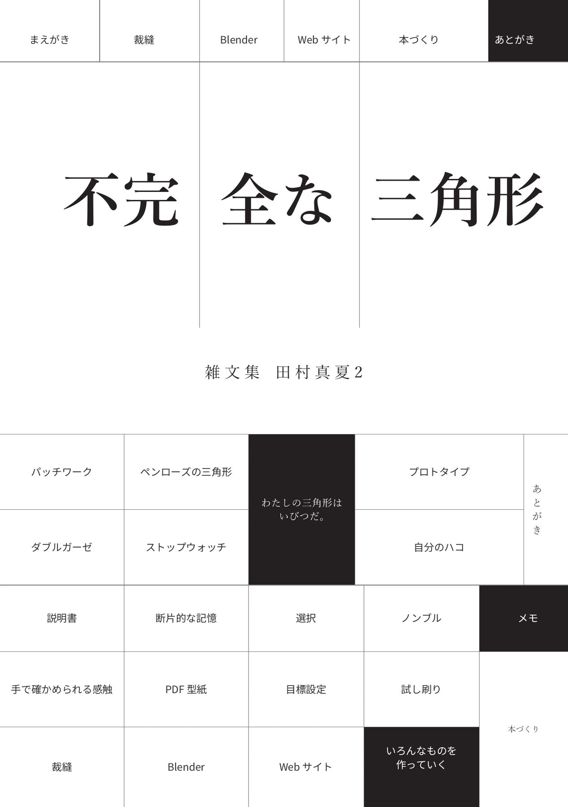
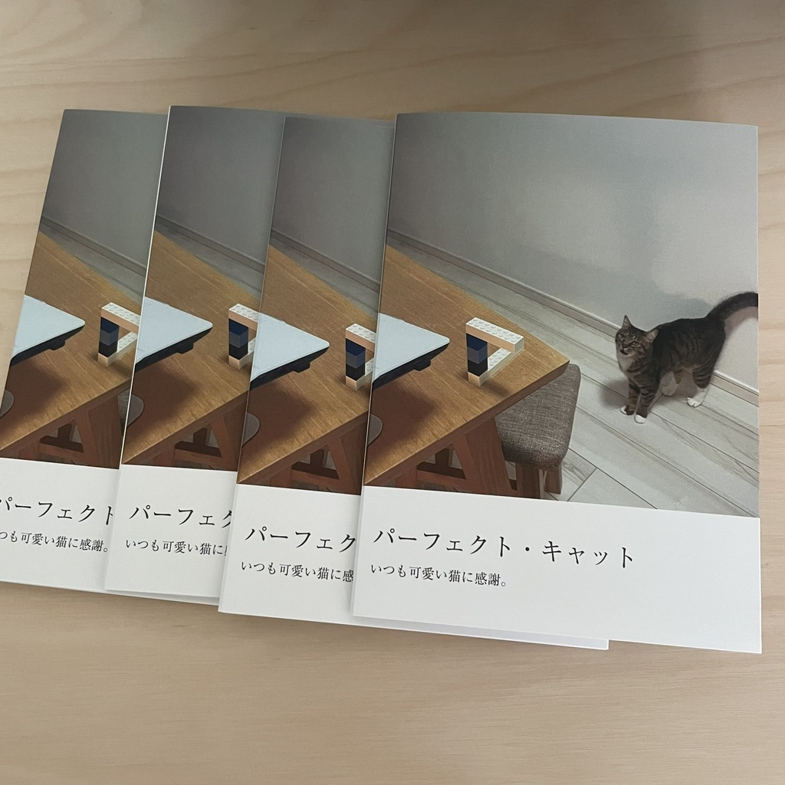

書籍一覧／購入

新刊・頒布予定
不完全な三角形
雑文集 田村真夏2
裁縫、Blender、Webサイト、本づくり。自分に合うやり方を探しながら、ものを作っていくエッセイ集。
2026年11月8日、文学フリマ東京43で頒布予定。価格は決まり次第お知らせします。

紙の本
雑文集 田村真夏
| ページ数 | 122p |
|---|---|
| 判型 | B6判 / 背表紙あり |
| 発行 | 2025年9月 |
noteにて販売していたエッセイマガジンの書籍版。16年にわたり綴ったエッセイ、合計25本を収録。同性パートナーとの日々、コロナ禍の仕事、映画やゲーム、親との関係――様々な方に手に取ってもらいたい、渾身のエッセイ集。
¥1,500（税込＋送料） 購入する（Booth）
PDF / 電子版・無料
小説「ミモザ」
| ページ数 | 25p |
|---|---|
| 形式 | PDF（A4サイズ） |
| 発行 | 2025年 |
第57回新潮新人賞応募作。新宿二丁目のレズビアンバー「ミモザ」で働く主人公・莉来（りら）とレズビアン女性たちの物語。全編を無料でお読みいただけます。
¥0（税込） 無料ダウンロード（Booth）
応援いただける方はBOOST可能版もあります

猫ミニ文庫本
パーフェクト・キャット
| ページ数 | 24p |
|---|---|
| 判型 | 文庫サイズ |
| 発行 | 2024年9月 |
我が家のパーフェクト・キャットの写真集。文庫サイズ24ページ、気軽にお手に取っていただけます。我が家の猫を、ぜひご堪能ください！
¥500（税込＋送料） 購入する（Booth）